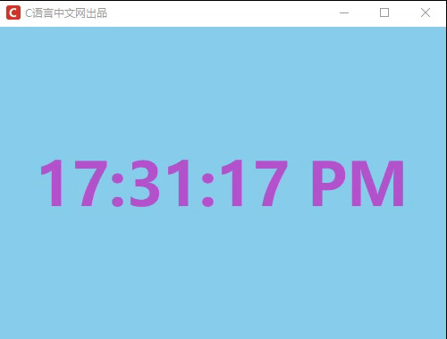

案例：构建数字时钟
截止到本节为止，和 Tkinter 相关的知识就讲解完毕了，本套教程从 GUI 是什么开始入门讲解，然后带领大家深入学习了 Python GUI 标准库 Tkinter，在教程中，我们主要介绍了 GUI 的相关概念、常用组件和布局方式等知识，下面使用 Tkinter 的相关知识实现一个数字时钟的简单案例。
Tkinter 实现上述功能并不复杂，只要使用 Tkinter 的相关组件和一些简单的逻辑处理即可，在编写这个案例的过程中大家要做到温故而知新。
程序代码如下所示：
通过上述代码就实现了一个简单的数字时钟，是不是非常的简单。
到此，Tkinter 教程讲解完毕，通过学习本套教程，您能熟练的掌握 Tkinter 的日常应用，学习完后，能够制作出简单的 GUI 程序。本套教程从初学者的角度出发进行讲解，所以对一些细枝末节的知识并未涉及，如果您对 Tkinter 或者 GUI 非常感兴趣，可以进一步的自主学习，这里推荐阅读 Tkinter 官方文档 —>点击前往。
Tkinter 实现上述功能并不复杂，只要使用 Tkinter 的相关组件和一些简单的逻辑处理即可，在编写这个案例的过程中大家要做到温故而知新。
程序代码如下所示：
from tkinter import *
from time import strftime
root = Tk()
root.geometry('500x350+300+300')
root.iconbitmap('C:/Users/Administrator/Desktop/C语言中文网logo.ico')
root.title("C语言中文网出品")
# 设置文本标签
lb = Label(root, font=("微软雅黑", 50, "bold"), bg='#87CEEB', fg="#B452CD")
lb.pack(anchor="center", fill="both", expand=1)
# 定义一个mode标志
mode = 'time'
# 定义显示时间的函数
def showtime():
if mode == 'time':
#时间格式化处理
string = strftime("%H:%M:%S %p")
else:
string = strftime("%Y-%m-%d")
lb.config(text=string)
# 每隔 1秒钟执行time函数
lb.after(1000, showtime)
# 定义鼠标处理事件，点击时间切换为日期样式显示
def mouseClick(event):
global mode
if mode == 'time':
# 点击切换mode样式为日期样式
mode = 'date'
else:
mode = 'time'
lb.bind("<Button>", mouseClick)
# 调用showtime()函数
showtime()
# 显示窗口
mainloop()
程序运行结果如下：

图1：简单的数字时钟
图1：简单的数字时钟
通过上述代码就实现了一个简单的数字时钟，是不是非常的简单。
到此，Tkinter 教程讲解完毕，通过学习本套教程，您能熟练的掌握 Tkinter 的日常应用，学习完后，能够制作出简单的 GUI 程序。本套教程从初学者的角度出发进行讲解，所以对一些细枝末节的知识并未涉及，如果您对 Tkinter 或者 GUI 非常感兴趣，可以进一步的自主学习，这里推荐阅读 Tkinter 官方文档 —>点击前往。
关注公众号「站长严长生」，在手机上阅读所有教程，随时随地都能学习。内含一款搜索神器，免费下载全网书籍和视频。

微信扫码关注公众号